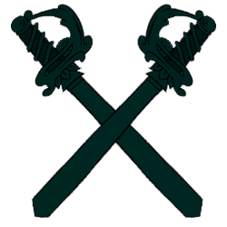

<ion-toolbar>
  <div class="logo">
    
    <div class="ludo">
      <span>Parchis</span>
    </div>
  </div>
</ion-toolbar>

<ion-content [fullscreen]="true">
  <div class="pathContainer" *ngFor="let n of numSequence(20);let i=index">
    <div class="path1"
      [ngStyle]="{'clip-path':'polygon(50% 42%,'+1000*math.cos((this.currentAngle-i*18-10)/180*math.PI)+'px '+1000*math.sin((this.currentAngle-i*18-10)/180*math.PI)+'px,'+1000*math.cos((this.currentAngle-i*18)/180*math.PI)+'px '+1000*math.sin((this.currentAngle-i*18)/180*math.PI)+'px'}">
    </div>
  </div>

  <div class="buttonpanel">
    <div class="monthlyBtn">
      <div>Monthly
      </div>
    </div>
    <div class="scoreBtn">
      <div>Score</div>

    </div>
  </div>
  <div class="contents">
    <cdk-virtual-scroll-viewport itemSize="2" minBufferPx="500" maxBufferPx="500">
      <div class="items" *cdkVirtualFor="let item of scoredata;let i=index">
        <div class="scoreNo">{{i+1}}</div>
        <div class="item"
          [ngStyle]="{'background':'url(../../../assets/img/avatars/avatar_'+item.avatar+'.png)','background-size':'100% 100%'}">
        </div>
        <div class="scoreName">{{item.name}}</div>
        <div class="scoreText">{{item.score}}</div>
      </div>
    </cdk-virtual-scroll-viewport>
  </div>

</ion-content>

<ion-footer class="ion-no-border">

  <div class="tabcontainer">
    <div class="tab1">
      
    </div>
    <div class="tab2">
      
    </div>
    <div class="tab3">
      
    </div>
  </div>
</ion-footer>
